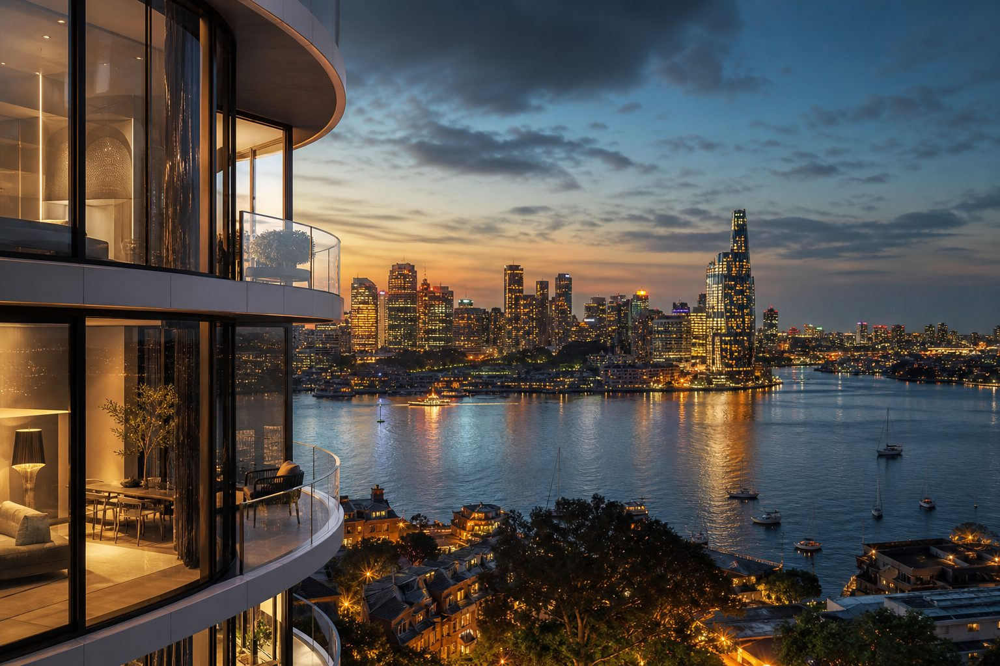
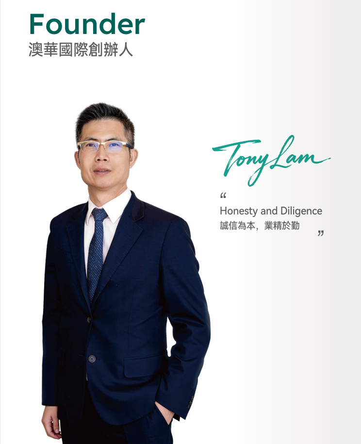
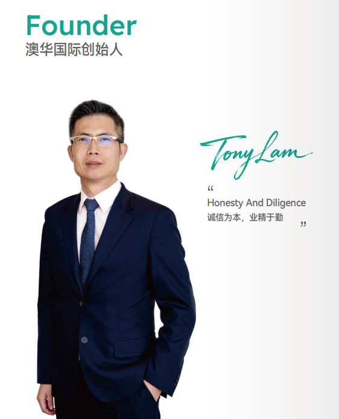
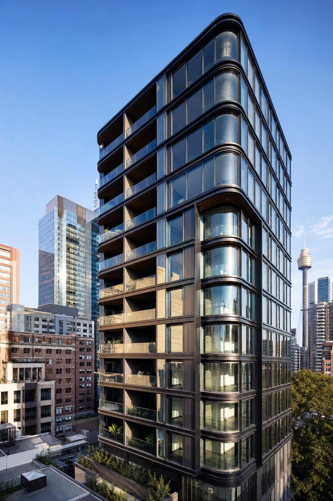
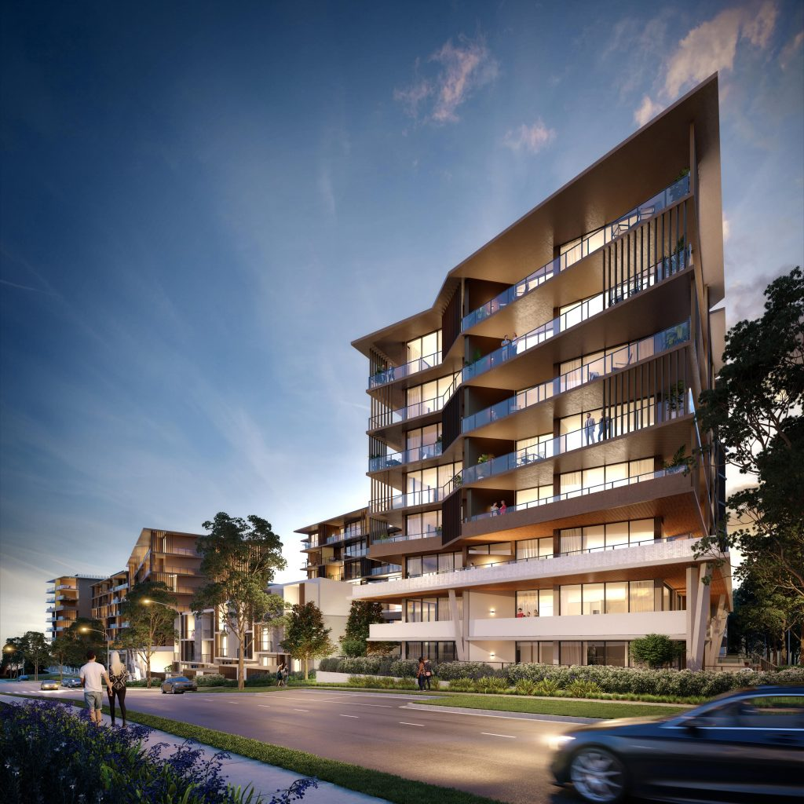
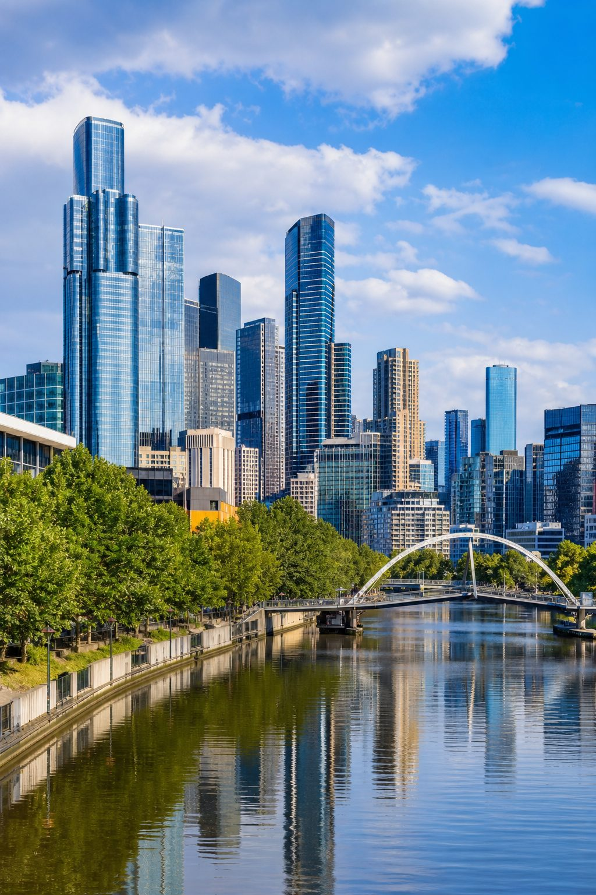
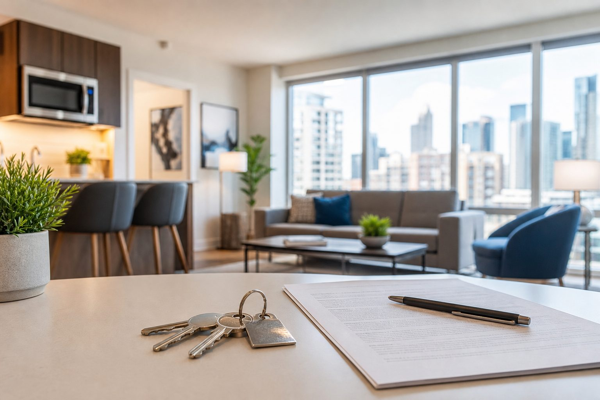
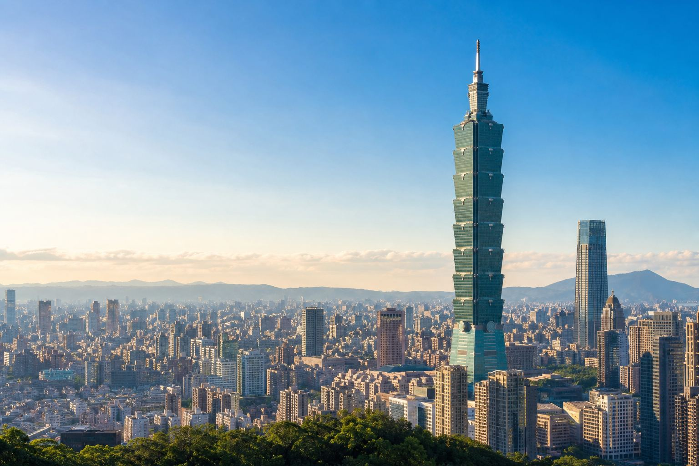
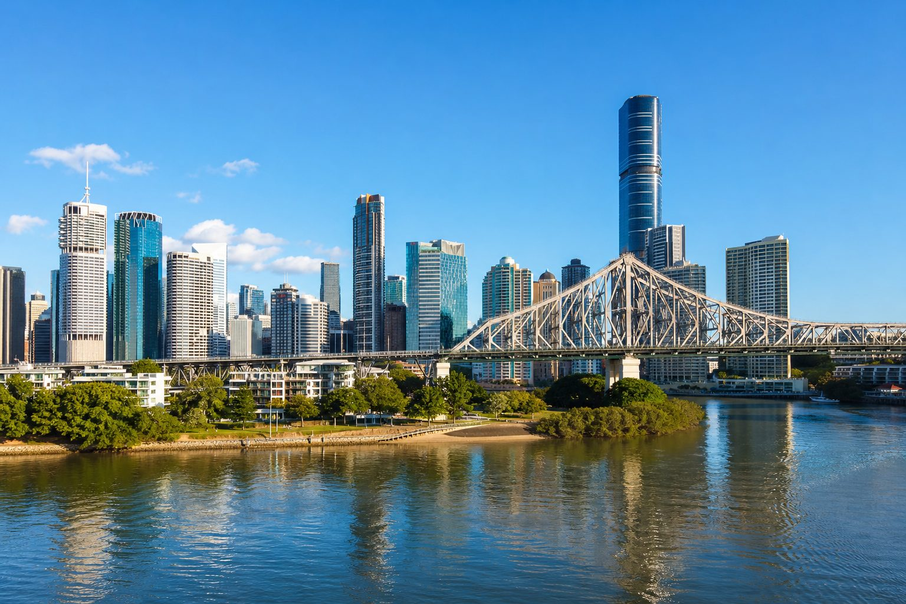
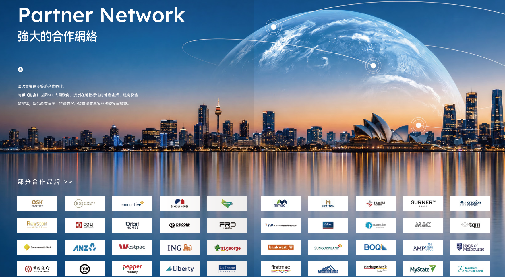

雄厚集團資源
依託澳華國際集團在金融、地產、法務、移民留學與物業管理的資源整合能力。

Company Foundation
環球置業是澳華國際集團旗下核心不動產服務品牌，承接集團於金融貸款、地產開發、物業管理、基金理財、法律服務、移民與留學等多元資源，為台灣客戶提供更完整、更有保障的跨境置產服務。
我們不只銷售物件，更重視從市場研究、建案比較、交易協調到交屋後租賃管理的完整路徑。透過澳洲在地團隊、台北亞太營運中心與全球合作網絡，協助客戶用更清晰的方式配置澳洲不動產。

依託澳華國際集團在金融、地產、法務、移民留學與物業管理的資源整合能力。
深耕雪梨、墨爾本、布里斯本、台北、迪拜、曼谷、東京等核心城市，掌握供給、區域與建案週期。
從選址、交易到租賃營運持續銜接，協助資產維持穩定運轉與長期管理。

Founder Profile
Tony Lam 現任環球置業母公司澳華國際董事總經理，畢業於新南威爾斯大學金融系，並於雪梨大學修習法律，具備金融與法律雙重背景。2005 年從貸款業務起步創辦澳華國際，現已發展為綜合型企業集團。
創業多年來，Tony 秉持「誠信為本，業精於勤」的經營理念，憑藉卓越的領導力與前瞻視野，在澳洲及國際市場建立深遠影響力。公司立足澳洲、放眼全球，以雪梨為核心，連結台灣、日本、東南亞及中東等亞太市場，建立跨區域、跨市場的國際化服務網絡。
Tony 與全球各界志同道合的夥伴攜手合作，秉持「低調務實、與夥伴共好」的原則，廣納全球優秀人才，將公司從 3 人的創業團隊，逐步發展為擁有 500 多名員工的跨國企業集團。
相信在 Tony 的帶領下，環球置業與澳華國際將成為台灣及亞太投資人值得長期信賴的澳房夥伴。
Development History
澳華國際創辦人
Tony Lam
進入房地產產業。

Tony Lam 以貸款業務起家於雪梨 Burwood 創辦澳華。

環球置業母公司澳華國際總部於雪梨市中心金融區買下一整層一千平方公尺的自有辦公空間設立澳華國際總部；同年澳華國際與策略合作夥伴合作成立公司，代理房地產專案。

澳華國際展開多據點佈局，為全球客戶提供金融、貸款及房地產投資服務。
澳華國際自 2014 年起拓展房地產開發事業，累計規劃及開發住宅與公寓近 1.2 萬戶，持續推進大型住宅及綜合社區佈局。
Epping
雪梨北區開啟澳洲精品住宅開發版圖。
Rouse Hill
持續拓展雪梨西北區開發版圖。
Leppington
規劃與結合住宅、商業與生活機能的大型綜合社區。
澳華國際同步拓展金融、法律、娛樂及餐飲等多元事業，持續深化澳洲房地產開發與全球資產服務佈局。

澳華國際於墨爾本 CBD 金融核心區購置整層自有辦公空間，設立墨爾本總部及房地產投資總部。

墨爾本環球置業 Burwood 分行正式啟用；
雪梨環球置業 World Square 分行正式啟用。

墨爾本 Box Hill 及墨爾本 Point Cook 分行正式開幕；
於日本成立「澳華國際株式會社」，環球置業同步拓展台灣與日本市場，深化亞洲佈局，持續擴大全球服務版圖。

布里斯本分行及台北101亞太總部正式開幕。
澳洲市場以雪梨總部為核心，串聯墨爾本與布里斯本分行，穩健拓展伯斯、坎培拉、阿德雷德等新據點。
海外市場方面，積極拓展泰國、越南、印尼等市場，全面提升市場占有率，透過全球化服務網絡，為客戶提供專業、安心且便利的海外置產服務。

Why Choose Us
以澳華國際集團全產業資源為後盾，整合市場研究、建案篩選、交易協調與交屋後管理。
結合金融貸款、法律、物業管理、開發商與合作夥伴資源，讓跨境置產擁有更完整的專業支援。
從人口、交通、供需、租金、就業與公共建設切入，協助客戶建立清晰判斷，降低資訊落差。
透過 GR Leasing 長租管理與 Homio 短租營運，協助降低空置風險、維持物業狀態並提升出租效率。
環球置業長期整合澳華國際集團旗下多元產業資源，並攜手國際開發商、澳洲在地指標性房地產企業、建商及金融機構，為客戶提供更完整的跨境置業支援。
從建案供應、貸款金融、法律協調到租賃管理，合作網絡能協助客戶更有效率地比較物件、掌握稀缺機會，並降低海外置產過程中的資訊落差。

How We Work
服務流程以「先判斷、再篩選、後管理」為核心，讓跨境置產從資訊蒐集到資產營運都有清楚節點。
比較城市、區域、供需、租金與長期成長條件。
依自住、投資、出租與持有策略嚴選物件。
協同貸款、法律、合約與交割節點，降低跨境資訊落差。
跟進交屋、驗收、租賃準備與物業狀態確認。
接上 GR Leasing 或 Homio，讓資產持續運轉並提升出租效率。
What We Provide
聚焦台灣客戶最常見的澳洲置產需求，從新建案、中古屋交易到交屋後長租與短租營運，提供清楚分工與可銜接的服務路徑。
Office Network
環球置業以台北亞太營運中心作為重要策略據點，連結雪梨、墨爾本、布里斯本、伯斯、坎培拉及阿德雷德六大澳洲核心城市，為台灣客戶提供更即時、更完整的澳洲房地產投資服務。
台北市信義區忠孝東路四段 525 號 14-15 樓
THE COLLECTIVE 巨蛋國際中心
台北市信義區信義路五段 7 號
台北 101 45 樓 A-1 室
Level 3, 370 Pitt Street
Sydney NSW 2000, Australia
Level 3, 171 La Trobe Street
Melbourne VIC 3000, Australia
7B/50-56 Sanders Street
Upper Mount Gravatt, QLD 4122
Brand Overview
環球置業以澳洲在地團隊與台北亞太營運中心，串聯全球資源，為客戶提供從交易到資產營運的長期房產合作服務。
查看精選建案Featured Projects
依手冊服務範圍，精選新建案、預售屋、公寓、連棟別墅與土地建屋方案，先比較城市與區域，再做租金、持有與後續管理評估。
Taipei Offices
台北市信義區忠孝東路四段 525 號 14-15 樓 · THE COLLECTIVE 巨蛋國際中心
台北市信義區信義路五段 7 號 · 台北 101 45 樓 A-1 室